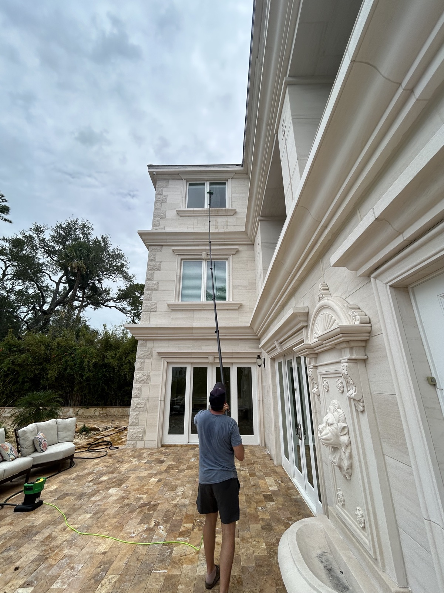
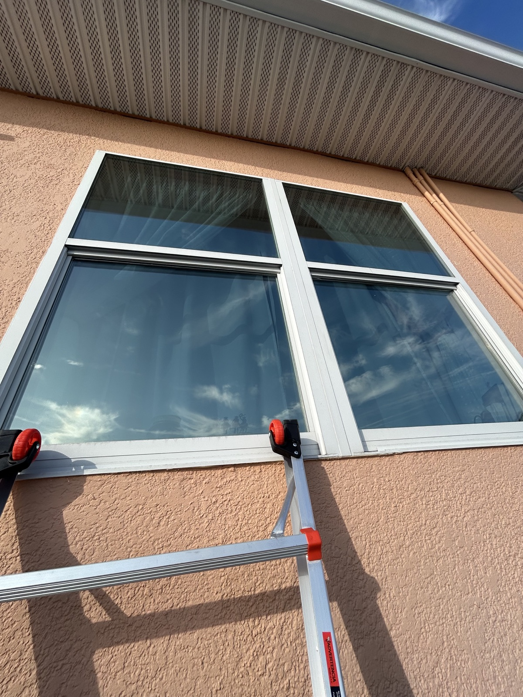

★★★★★
“Very nice to work with. Arrived on time. Great window cleaning. It was such a pleasure that I put the window cleaning on a regular schedule.”
Seminole & St. Pete Window Cleaning
Residential and commercial window cleaning with dependable scheduling, respectful service, and results you can see immediately.
If anything is missed, we will make it right. We stand behind the quality of every job.
★★★★★
“Very nice to work with. Arrived on time. Great window cleaning. It was such a pleasure that I put the window cleaning on a regular schedule.”
★★★★★
“We at Coastline Title of Pinellas in Seminole had a great experience with Warner Window Cleaning. Luke did an excellent job—his attention to detail was impressive, and the results truly show. His customer service was top-tier, and he was professional, kind, and friendly throughout the entire process. Our windows have never looked better. Highly recommend!”
★★★★★
“It is incredibly rare to find a vendor who treats facility maintenance like a true craft, but he is genuinely passionate about what he does, and it shows in the final product. He didn’t just rush through the job to get to the next account; he invested an immense amount of time, care, and meticulous attention to detail into making sure every single pane of glass was perfectly streak-free.”
Owner-Operated Window Cleaning
Clean, streak-free windows can transform how your home or business looks and feels. They brighten every room, sharpen curb appeal, and help your property make a welcoming first impression.
I’m Luke Warner, owner of Warner Window Cleaning. As a locally owned and operated business, I personally bring careful workmanship, dependable communication, and friendly customer service to every job. Whether you need help with your home, storefront, or commercial property, my goal is to earn your trust and leave every pane looking its best.
Ready to see the difference? Get in touch today, or read what local customers have shared in our verified reviews.

Upfront pricing with no surprise add-ons.
Flexible scheduling and clear arrival windows.
Friendly, careful technicians who respect your property.
Streak-free results backed by our satisfaction guarantee.
We provide local window and gutter cleaning services throughout Pinellas County, including Seminole, St. Petersburg, Indian Rocks Beach, Largo, Pinellas Park, Clearwater, and Belleair.
See Service Areas